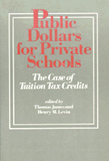

Addressing the sensitive issue of public support for private education
Addressing the sensitive issue of public support for private education


 Addressing the sensitive issue of public support for private education
Addressing the sensitive issue of public support for private education

|  |
Public Dollars for Private SchoolsThe Case of Tuition Tax Creditsedited by Thomas James and Henry M. Levinpaper EAN: 978-0-87722-386-3 (ISBN: 0-87722-386-6) |
What are the consequences for parents, public and private schools, and the federal treasury of the controversial tuition tax credit proposals? Public support of private education is a sensitive policy issue with a long history in the United States and other countries. The question "Who pays?" touches on such fundamental issues as the purpose of public education in a democracy and on matters of equity, individual choice, and religious toleration. These original essays by some of the leading writes on American educational policy provide definitive analyses of both the political and technical questions surrounding this public issue.
Thomas James is affiliated with the Institute for Research on Educational Finance and Governance at Stanford University.
Henry M. Levin is affiliated with the Institute for Research on Educational Finance and Governance at Stanford University.
Education
Political Science and Public Policy
© 2015 Temple University. All Rights Reserved. This page: http://www.temple.edu/tempress/titles/307_reg.html.